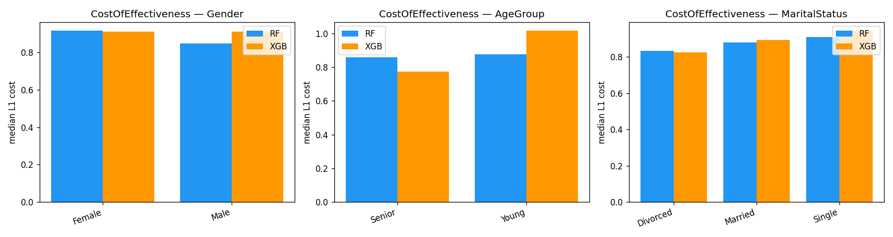

Data & ML
Are AI recommendations equally achievable?
Auditing whether the counterfactual ‘what to change’ advice of an attrition model costs some demographic groups more than others.
- protected attributes audited
- 3
- salary-cap scenarios
- 3

- Equal prediction metrics don't mean equal recourse: we measured the cost and availability of counterfactual actions per group.
- I led the fairness and FACTS analysis, the interpretation and the visualizations.
- Python
- scikit-learn
- XGBoost
- DiCE
- FACTS-style recourse metrics
01
Question
An employee-attrition model (Random Forest and XGBoost on the IBM HR dataset) flags people at risk, and DiCE suggests changes that would flip the prediction. We asked whether those suggestions are equally achievable across gender, age and marital-status groups — not just whether the predictions are equally accurate.
02
Method
- Constraints so actions are realistic: immutable features, permitted ranges and a cap on salary changes.
- FACTS-inspired comparisons per group: effectiveness, cost, effectiveness within a budget and number of options.
- A sensitivity experiment tightening the salary cap from +50% to +35% and +20%.
03
Results
Recourse was available for almost everyone under the explored caps, but cost and within-budget effectiveness revealed gaps that availability alone hides. Tightening the salary cap doubled XGBoost's effectiveness gap for marital status (0.017 → 0.034), while Random Forest stayed more stable.
An audit of a benchmark dataset, not a validated HR system; changing model inputs doesn't prove an action would prevent real attrition.
04